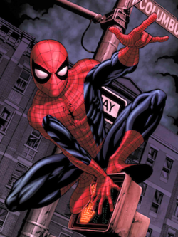

Spider-Man is a superhero in American comic books published by Marvel Comics. Created by writer-editor Stan Lee and artist Steve Ditko, he first appeared in the anthology comic book Amazing Fantasy #15 (August 1962) in the Silver Age of Comic Books. Widely regarded as one of the most popular and commercially successful superheroes, he has been featured in comic books, television shows, films, video games, novels, and plays.
In 1962, with the success of the Fantastic Four, Marvel Comics editor and head writer Stan Lee was looking for a new superhero idea. He said the teenage demand for comic books and a character with whom they could identify led to the creation of Spider-Man.[2] As with Fantastic Four, Lee saw Spider-Man as an opportunity to "get out of his system" what he felt was missing in comic books.[3]